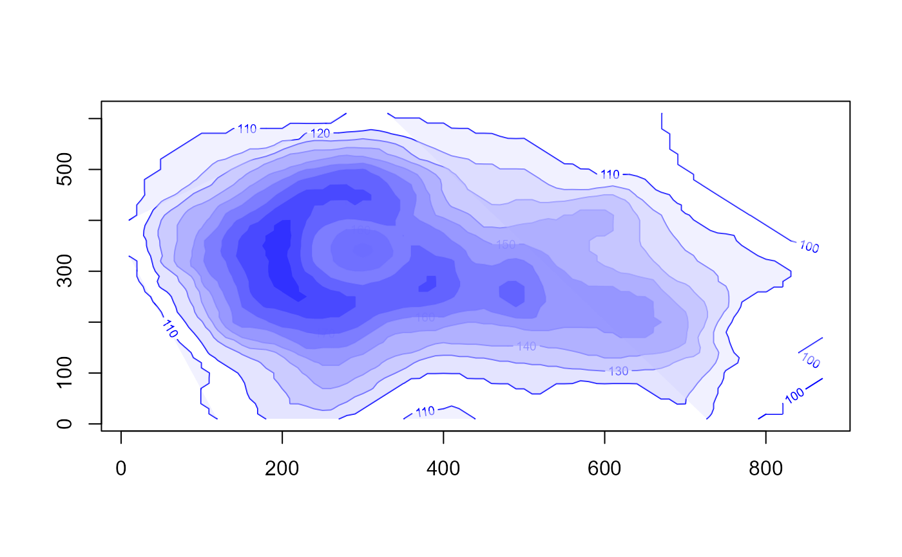
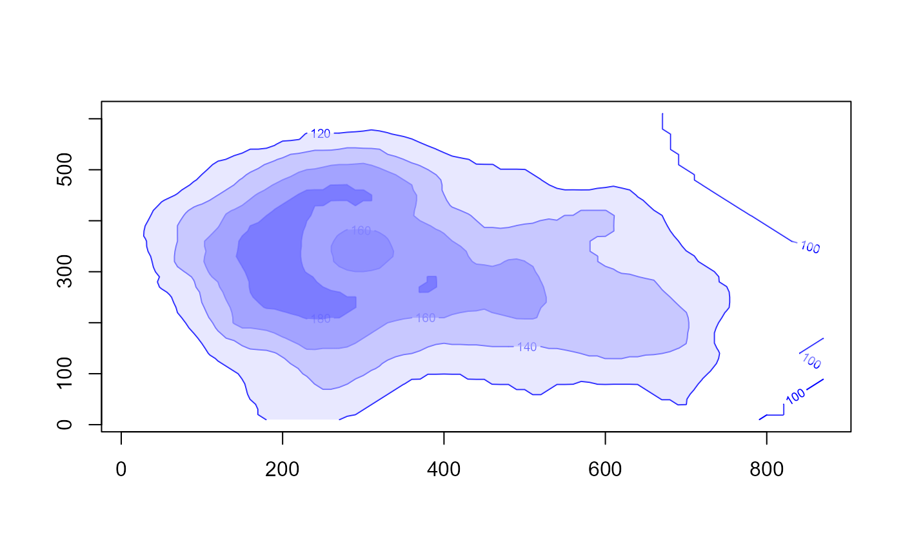
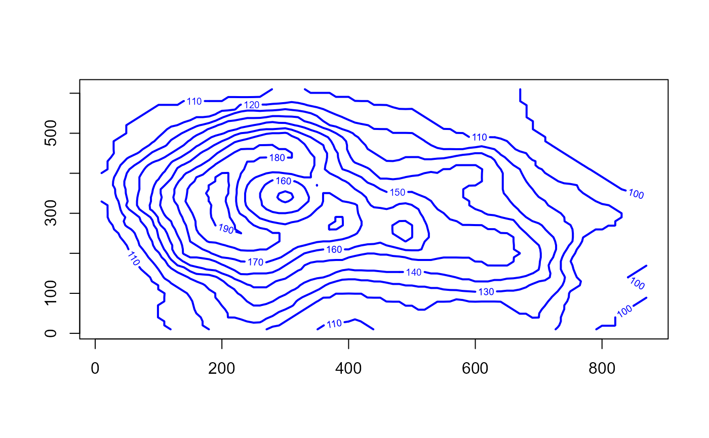

This is an enhancement to contour, written as a
wrapper for that function. It creates a contour plot, or adds contour lines
to an existing plot, allowing the contours to be filled and returning the
list of contour lines.
Usage
contourf(
x = seq(0, 1, length.out = nrow(z)),
y = seq(0, 1, length.out = ncol(z)),
z,
nlevels = 10,
levels = pretty(zlim, nlevels),
zlim = range(z, finite = TRUE),
col = par("fg"),
color.palette = colorRampPalette(c("white", col)),
fill.col = color.palette(nlevels + 1),
fill.alpha = 0.5,
add = FALSE,
...
)Arguments
- x, y
locations of grid lines at which the values in
zare measured. These must be in ascending order. By default, equally spaced values from 0 to 1 are used. Ifxis a list, its componentsx$xandx$yare used for x and y, respectively. If the list has componentx$zthis is used forz.- z
a matrix containing the values to be plotted (NAs are allowed). Note that
xcan be used instead ofzfor convenience.- nlevels
number of contour levels desired iff levels is not supplied
- levels
numeric vector of levels at which to draw contour lines
- zlim
z-limits for the plot. x-limits and y-limits can be passed through ...
- col
color for the lines drawn
- color.palette
a color palette function to be used to assign fill colors in the plot
- fill.col
a call to the
color.palettefunction or an an explicit set of colors to be used in the plot. Usefill.col=NULLto suppress the filled polygons. a vector of fill colors corresponding to levels. By default, a set of possibly transparent colors is calculated ranging from white tocol, using transparency given byfill.alpha- fill.alpha
transparency value for
fill.col, either a hex character string, or a numeric value between 0 and 1. Usefill.alpha=NAto suppress transparency.- add
logical. If
TRUE, add to a current plot.- ...
additional arguments passed to
contour, including all arguments ofcontour.defaultnot mentioned above, as well as additional graphical parameters passed bycontour.defaultto more basic functions.
Value
Returns invisibly the list of contours lines, with components
levels, x, y. See
contourLines.
See also
contourplot from package lattice.
Examples
x <- 10*1:nrow(volcano)
y <- 10*1:ncol(volcano)
contourf(x,y,volcano, col="blue")

contourf(x,y,volcano, col="blue", nlevels=6)

# return value, unfilled, other graphic parameters
res <- contourf(x,y,volcano, col="blue", fill.col=NULL, lwd=2)

# levels used in the plot
sapply(res, function(x) x[[1]])
#> [1] 100 100 100 110 110 110 110 120 130 140 150 150 160 160 170 170 170 180 180
#> [20] 190